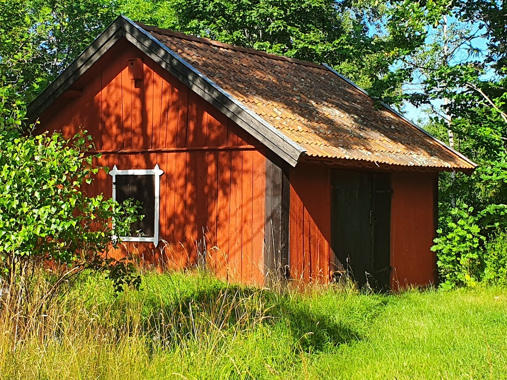

Aspsunds by är belägen i Söderby-karls socken, ca 17 km norr om Norrtälje. Skriven historia sträcker sig tillbaks till medeltid men baserat på järnåldersgravar, att byn har ett naturnamn samt av flera spännande fynd, har den troligen grundats under yngre järnålder/vikingatid.

Av kartor och dokument från 1600-tal kan man se att det förr var en medeltida solskiftesby med 6 stycken gårdar belägna mycket tätt i en rad från norr till söder. Efter laga skifte och ombildning av fastigheter finns idag endast två bebyggda gårdar kvar längs med byvägen, samt ytterligare 2 gårdar i den efter laga skifte utflyttade delen Galltorp. Tomt av en tredje gård är fortfarande väl synlig med jordkällare och syrenhäck
Dessutom finns inom Aspsund idag ett antal villor och av både äldre och nyare ursprung.
Markerna gränsar i öster mot ett sjösystem bestående av Brosjön, Norrsjön, Torkan samt de åar som binder ihop dessa.
Namnet betyder troligen “sundet där det växer Asp” och var en smal del av den farled som fanns under järnålder och medeltid då vattnet stod ungefär upp till nuvarande byväg. Man kunde med lätthet ta sig med båt (liknande ledungsbåten/vikingaskeppet Viksbåten, funnet ett par km uppströms) söderut till Norrtäljeviken eller österut via Norsviken och Bagghusfjärden.